Dining Room · Prairie Horizon · Rustic Frame
Country Windmill Textured
A quiet prairie scene with open sky and a distant horizon. Strong for farmhouse dining rooms, cabins, heritage interiors, and rustic hospitality spaces.
Open Horizons Collection
Open Horizons brings together wide landscapes, distant roads, prairie skies, quiet lakes, badlands, and western views that make a room feel calmer, larger, and more grounded.
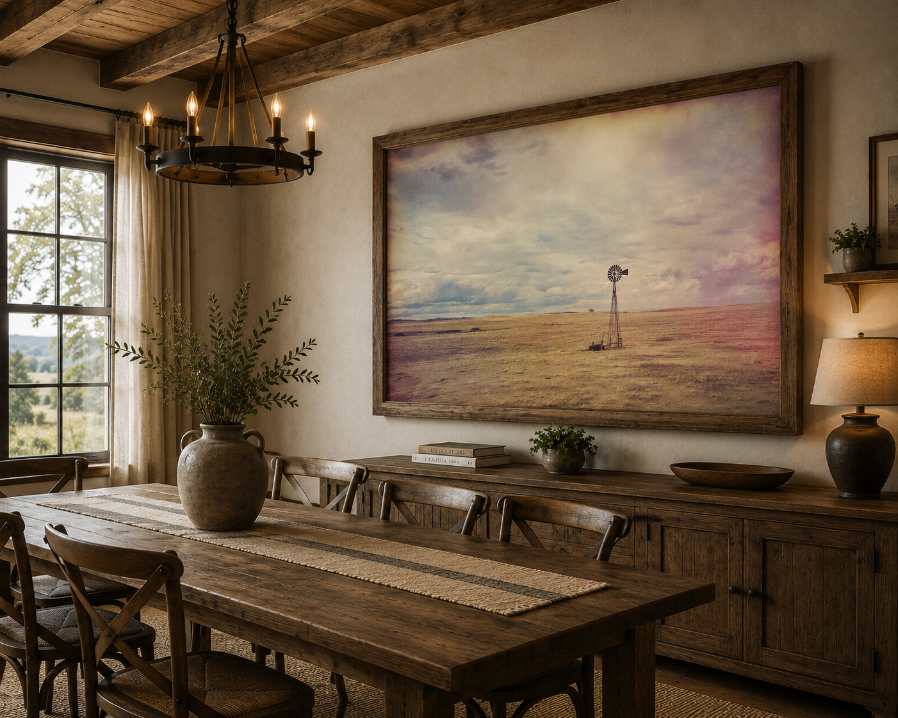
Featured Room Preview
Country Windmill Textured — open prairie, soft atmosphere, and a quiet rural horizon for dining rooms, cabins, farmhouse interiors, and warm residential spaces.
The Mood
This collection is built around the feeling of looking outward — across plains, valleys, lakes, roads, ridges, and open sky. The work is less about spectacle and more about the sense of space a landscape can bring into a room.
Open Horizons is strongest in rooms that need calm scale without becoming visually crowded. These pieces work especially well as large horizontal prints above sofas, beds, dining sideboards, cabin fireplaces, office credenzas, and lodge-inspired living spaces.
Room Previews
Use these room mockups to compare scale, mood, and placement before choosing a print. Each artwork link opens purchase options on Dan’s print storefront.
Dining Room · Prairie Horizon · Rustic Frame
A quiet prairie scene with open sky and a distant horizon. Strong for farmhouse dining rooms, cabins, heritage interiors, and rustic hospitality spaces.
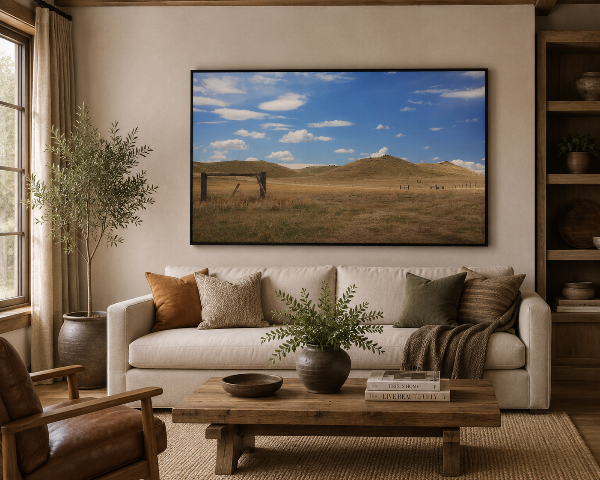
Living Room · Rolling Hills · Big Sky
Open grassland, soft hills, fence lines, and a clean blue sky. One of the clearest expressions of the Open Horizons collection.
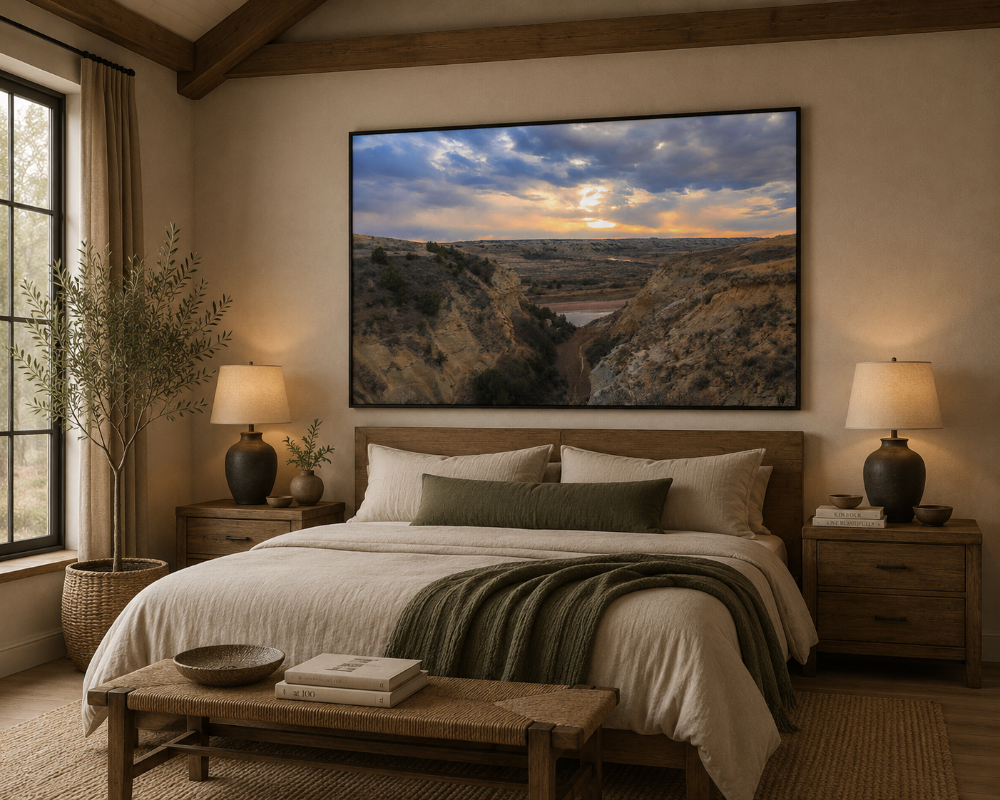
Bedroom · Badlands Distance · Warm Light
A western canyon view with distance, light, and atmosphere. Works well above beds where a room needs depth and quiet drama.
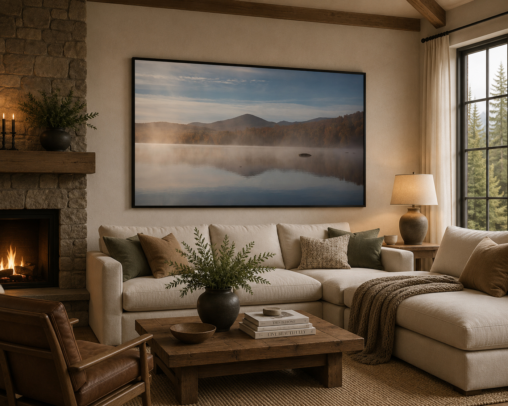
Living Room · Misty Lake · Quiet Distance
A calm lake horizon with soft fog and distant hills. This is the quieter side of Open Horizons — spacious, still, and easy to live with.
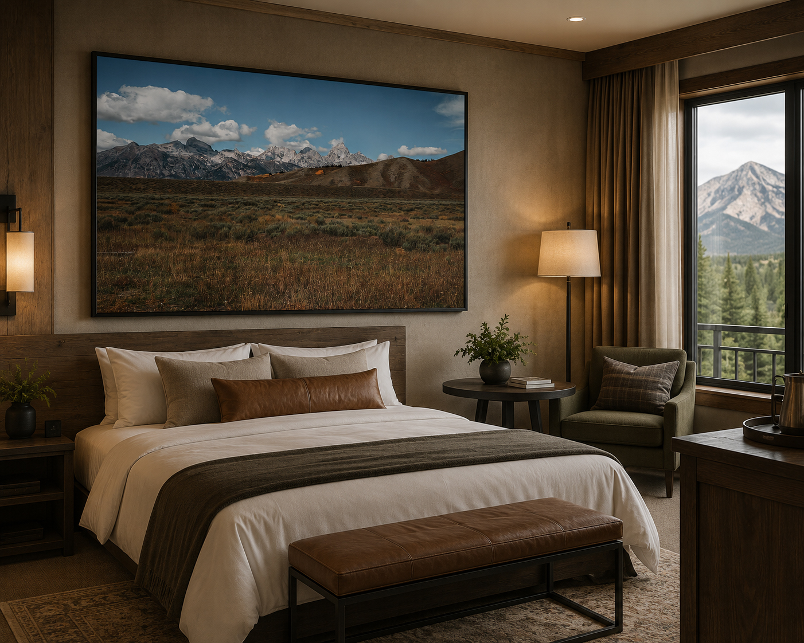
Bedroom · Western Mountain Basin
Broad western terrain and a distant mountain line for lodge bedrooms, cabins, and rustic-modern residential interiors.
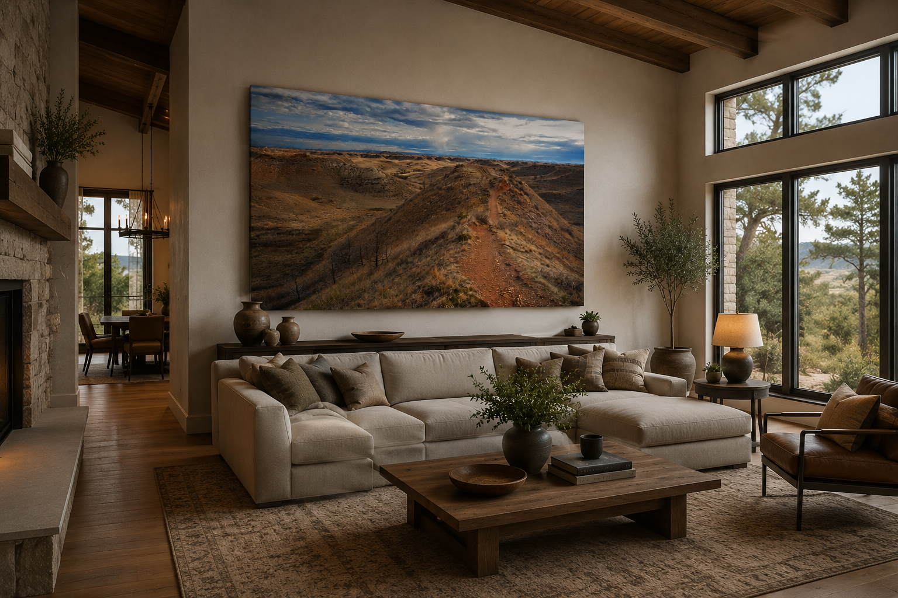
Living Room · Trail · Wide Land
A leading trail through open badlands terrain. A stronger statement piece for large walls and western-inspired spaces.
Farmhouse · Heritage Landscape
Warm, nostalgic, and open. A soft heritage-forward horizon for rustic dining rooms and quiet residential interiors.
Selected Works
Nine selected Open Horizons prints built around prairie, dunes, roads, badlands, open sky, and distant landforms. Each piece is chosen for visual breathing room and strong residential placement potential.
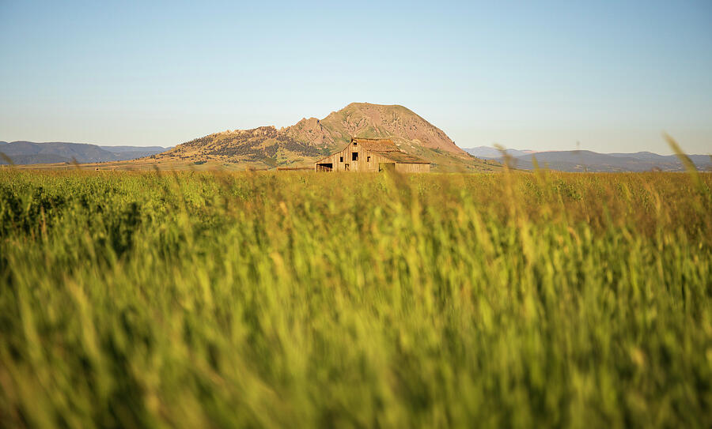
Prairie · Barn · Distant Mountain
A low, open field with a weathered barn and Bear Butte rising beyond the grass. This is one of the strongest collection anchors because it feels spacious, rural, and quietly memorable.
Shop Print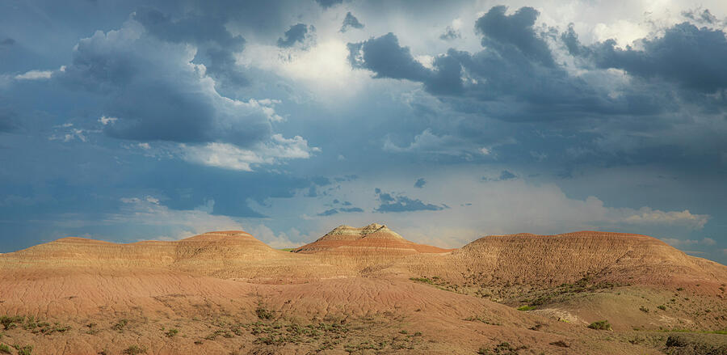
Badlands · Storm Sky · Wide Land
Layered badlands under a dramatic sky. The wide format brings scale and distance without feeling crowded, making it ideal for larger walls.
Shop Print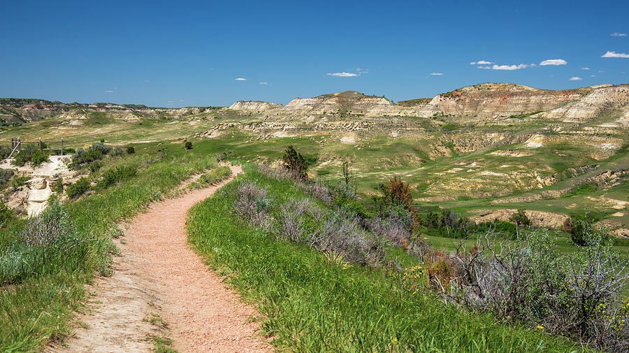
Trail · Canyon · Open Distance
A trail moving through open North Dakota terrain with depth, light, and natural movement. It gives the eye somewhere to travel.
Shop Print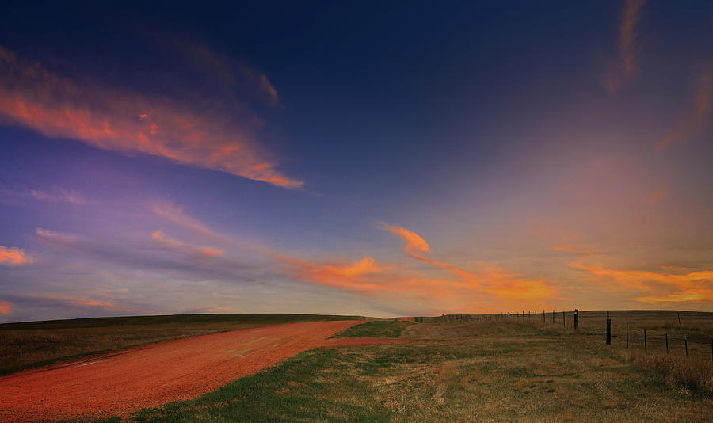
Road · Prairie · Sunset Sky
A red dirt road disappearing into a glowing western sky. This piece captures the road-and-horizon feeling at the heart of the collection.
Shop Print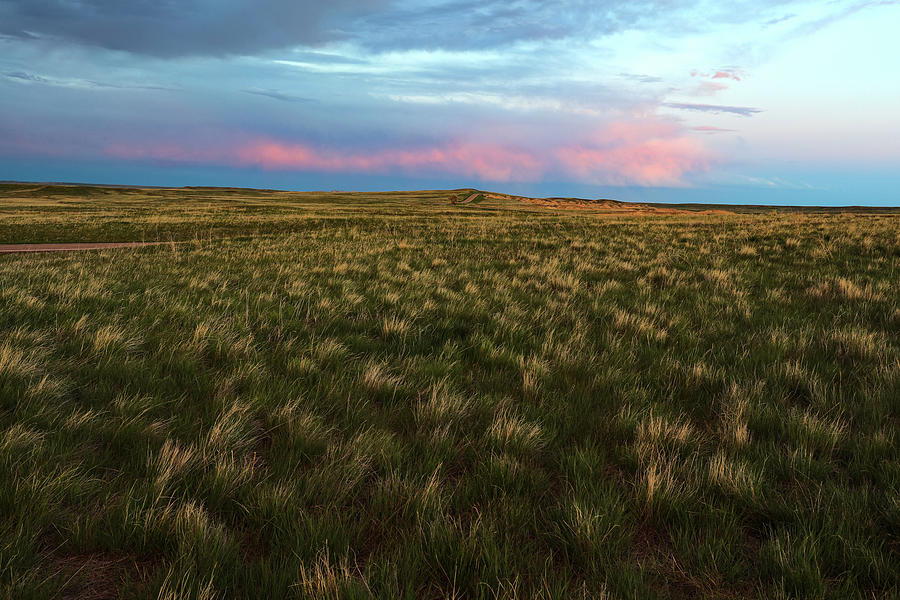
Prairie · Pastel Sky · Open Field
Soft evening color over open grassland. This is a quieter horizon piece that works well when a room needs warmth and breathing room.
Shop Print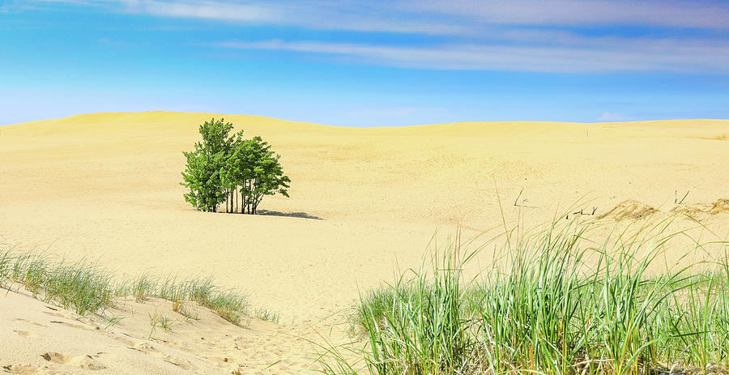
Dunes · Minimal · Bright Horizon
A clean dune landscape with a small stand of trees and open sand. Its simplicity gives the collection a lighter, more minimal direction.
Shop Print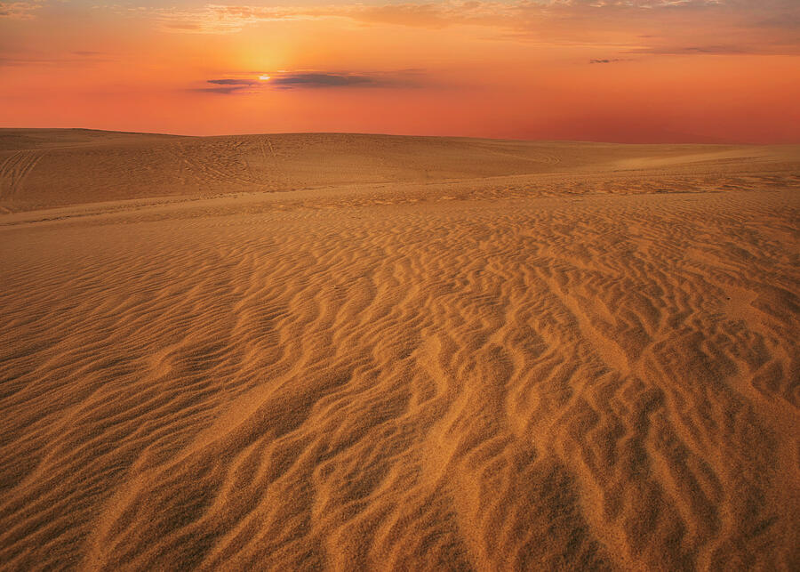
Dunes · Warm Light · Vast Sky
Sunset over wind-shaped dunes with rippled texture and a low horizon. A strong warm-toned statement piece with real visual space.
Shop Print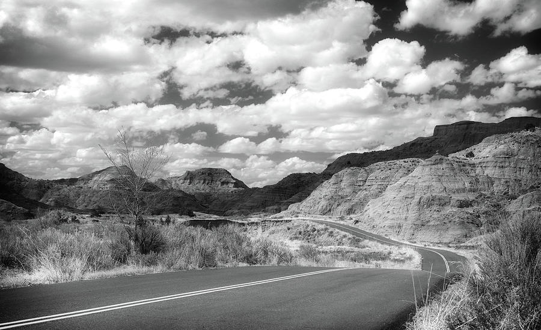
Black & White · Road · Badlands
A monochrome road scene through badlands terrain. It adds contrast, structure, and a more refined western mood to the collection.
Shop Print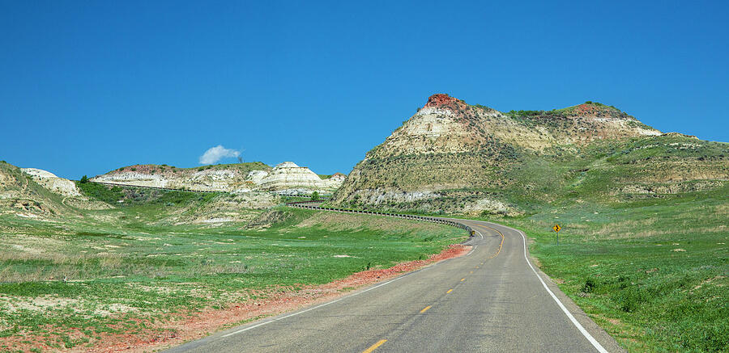
Road · Green Badlands · Big Sky
A bright road leading into open badlands country. This piece adds movement, distance, and a clearer daytime palette.
Shop PrintInterior Guidance
Open landscapes are especially useful when a room needs scale, depth, and atmosphere without visual clutter.
Use large horizontal pieces to visually widen the room and anchor the seating area. Canvas, metal, and framed paper all work well here.
Choose softer horizons, quiet lakes, or warm canyon light for bedrooms. Large prints can feel restful when the composition has breathing room.
Prairie, windmill, and broad field imagery works especially well with wood tones, rustic-modern furniture, and warm lighting.
Western landscapes, mountains, badlands, and open lake scenes pair naturally with stone, leather, timber, and earth-toned interiors.
Free Mockup Help
Send a room photo and Dan can suggest artwork direction, size, format, and framing style before you order.
Open Horizons FAQ
Open Horizons works best in rooms that benefit from a larger sense of space: living rooms, bedrooms, dining rooms, cabins, lake houses, rustic-modern homes, offices, and hospitality rooms.
For large walls, start around 30×40, 36×48, 40×60, or larger. Above sofas and beds, a horizontal print that is roughly two-thirds the width of the furniture is usually a strong starting point.
Framed fine art paper gives a refined residential look, canvas works well in warm rustic interiors, and metal or acrylic can give open landscapes a clean modern presence.
Yes. Send a room photo and Dan can recommend an image, size, and format, or create a simple digital mockup to help you visualize the artwork in your space.